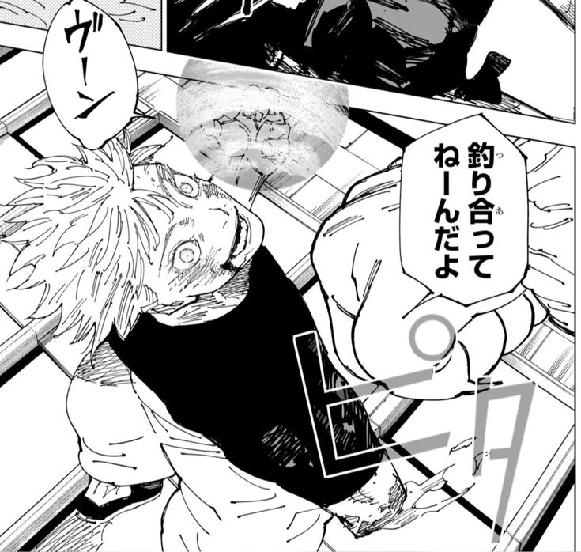

O Infinito e uma das ideias mais fascinantes do Gojo, porque transforma a defesa dele em algo quase absurdo. Ninguem consegue toca-lo facilmente, e isso reforca a imagem de um personagem inalcançavel. E uma habilidade muito elegante, mas tambem ajuda a explicar por que ele se sente acima dos outros o tempo inteiro.